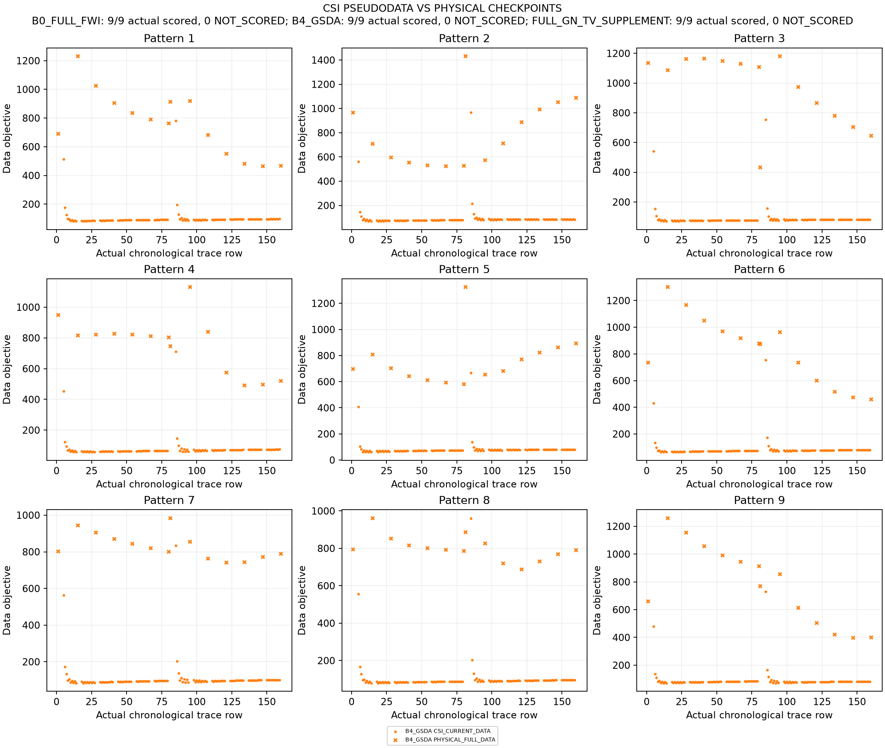
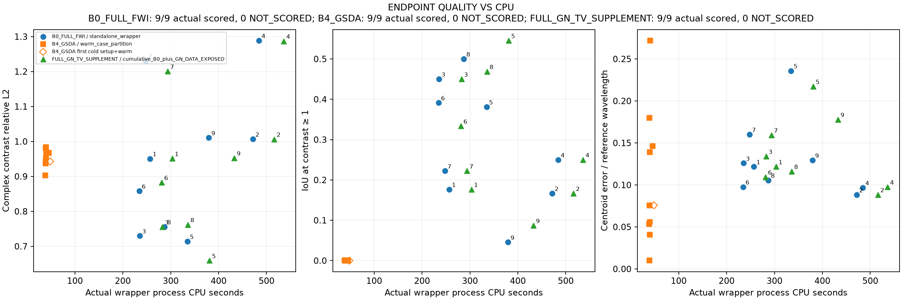
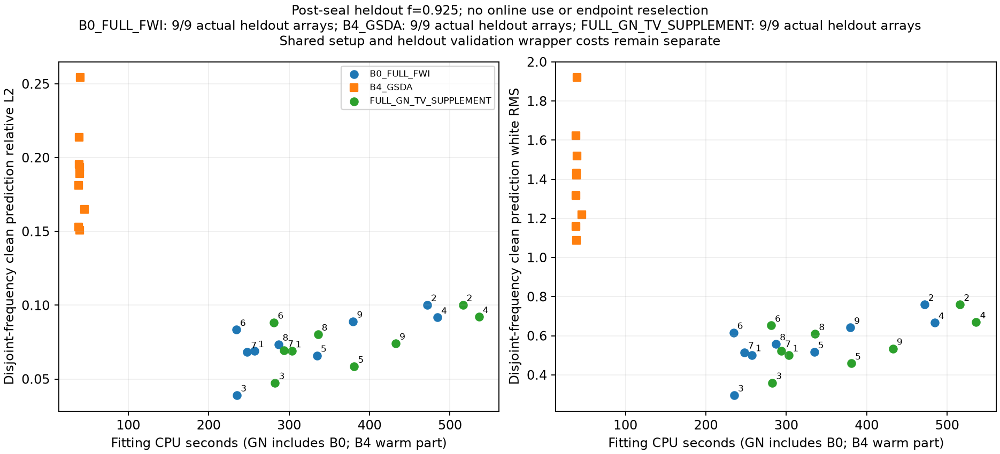

发布于2026-10-30（新加坡时间），经用户明确授权。科研已于2026-10-30 06:02封账；本次新增0 FE / 0 RHS。原报告中“未发布”保留为封账历史状态。发布记录
实际图像与失败边界
所有图来自封存数组。7×7是物理材料分辨率，放大图片不是新的物理成像分辨率。





发布于2026-10-30（新加坡时间），经用户明确授权。科研已于2026-10-30 06:02封账；本次新增0 FE / 0 RHS。原报告中“未发布”保留为封账历史状态。发布记录
所有图来自封存数组。7×7是物理材料分辨率，放大图片不是新的物理成像分辨率。


